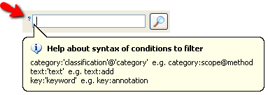

Búsqueda con filtrosBúsqueda con filtros
Búsqueda con filtrosBúsqueda con filtros
Este sistema de filtrado consiste en aprovechar la metainformación con que las refactorizaciones cuentan como es su nombre, descripción, motivación, sus palabras clave y las categorías a las que pertenecen con el fin de resaltar las refactorizaciones que cumplan con ciertos criterios establecidos y ocultar el resto. Las condiciones de filtro que hayan sido creadas se mostrarán para que en todo momento se tenga conocimiento de ellas, además se podrán gestionar desde la parte inferior del panel de clasificación.
Los criterios por los que se puede filtrar son: categorías, texto y palabras clave. La sintaxis a la que deberán responder será la siguiente:
Debido a que las búsquedas para crear condiciones de filtros deben de realizarse con una sintaxis fija se proporciona ayuda integrada para que facilite su construcción, evitando así que se tenga que conocer de antemano esta sintaxis. Para hacer visible esta ayuda tendremos que hacer clic sobre el cuadro de texto donde se introduce la búsqueda y acto seguido aparecerá el icono de una interrogación a su izquierda. Si nos situamos sobre ella con el cursor o bien pulsamos la tecla F1 aparecerá la ayuda en forma de popup, como muestra la ilustración.

Popup con ayuda para el filtrado